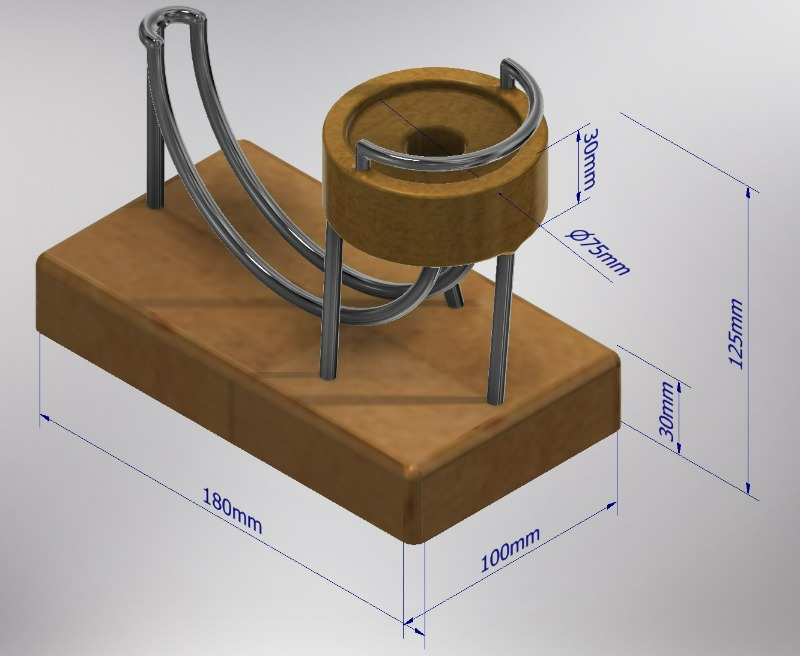
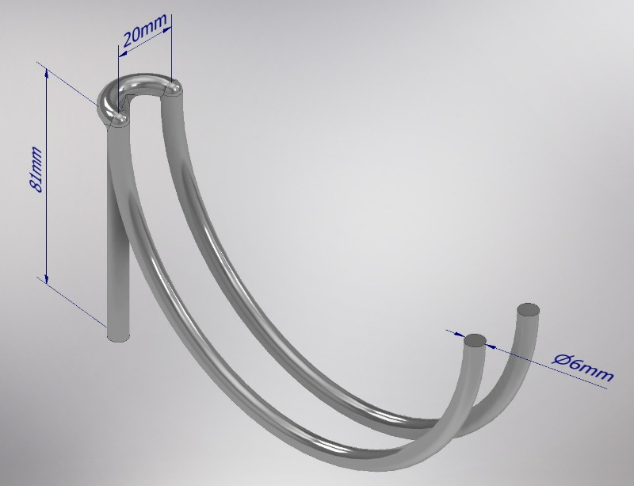
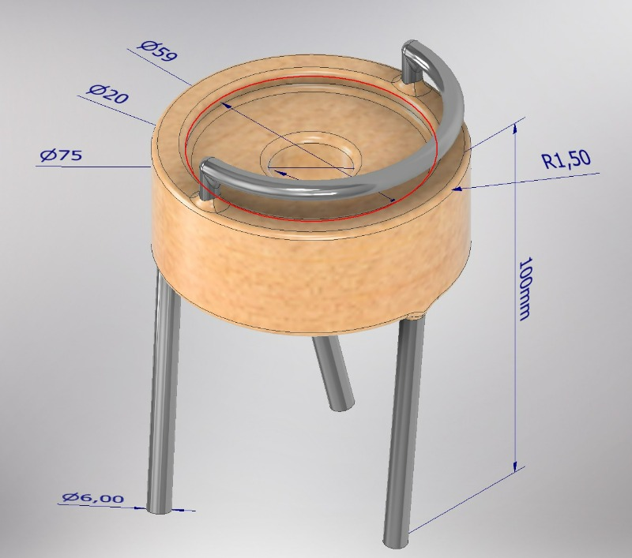
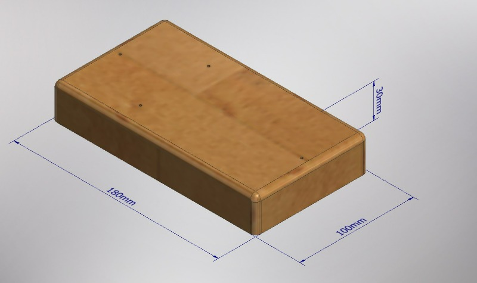

1. Solid Edge <<
Previous Next >> 磁力吸引
2.利用 Solid Edge 繪圖永動機模擬器的零組件
1.設計繪圖:

2. 以下是參考onshapePerpetual Motion Simulator並且使用Solid Edge所畫
組合圖:
零件
1.軌道

2.塔座

3.底座

以上是我41136103吳裕源及另一位組員伙伴4112321柯程桂於2013/10/23一同繪製。
心得:
1.使用者操作性：Solid Edge相對而言比較繪圖，螢幕佈局清晰，功能區分明顯，使初學者也能比較快速地在地上手學習。
2.建模功能：軟體提供了豐富的建模工具和功能，如實體建模、曲面建模、組裝設計等，可以滿足各種不同的設計需求。
3.多種建模方式：Solid Edge支援同步建模和傳統特徵建模，使用者可以根據自己的喜好和專案需求選擇合適的建模方式。
以上這三點是我們利用 Solid Edge這個軟體繪圖中所得出的使用心得。
簡報製作:
這個是我們製作的簡報。
1. Solid Edge <<
Previous Next >> 磁力吸引